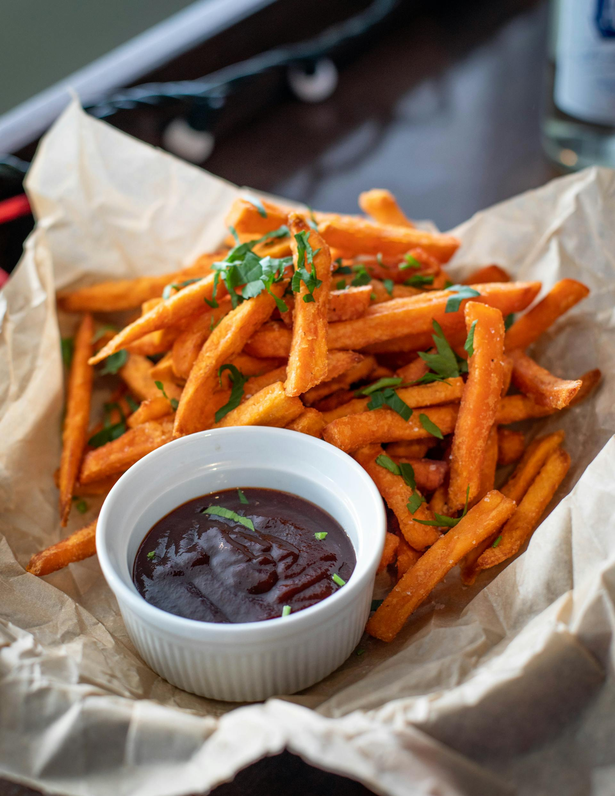
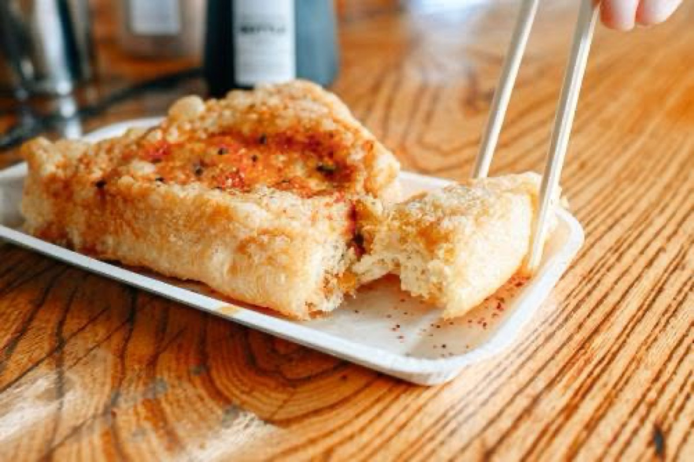
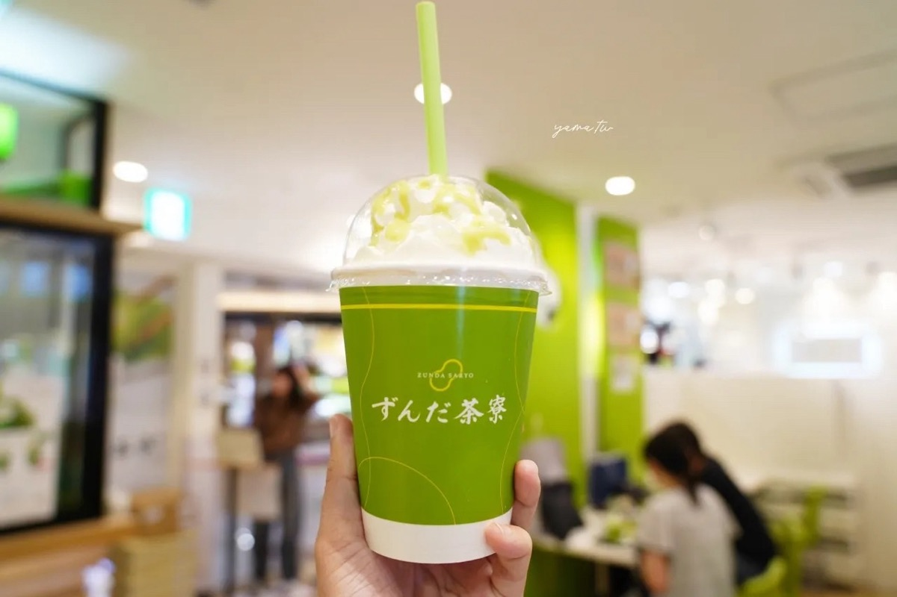

Cuisine
美饌探索
從炭火牛舌到甜蜜毛豆泥
發現仙台的美味秘密
Cuisine
從炭火牛舌到甜蜜毛豆泥
發現仙台的美味秘密


仙台第一名物，炭火烤牛舌厚切，配上蔥花飯糰與麥飯，是到仙台必吃的經典美味。
仙台牛舌採用厚切方式，塗上特製鹽醬，用炭火慢慢烤至表面微焦、內裡軟嫩。 咬下去先是炭香，接著是牛肉的鮮甜，最後是淡淡的鹹味層次分明。
正統的牛舌定食會附上麥飯（有時是蔥花飯糰）和味噌湯。 有些人會把芥末加在飯上，有些則喜歡直接品嚐原味。
「利久」是仙台最具代表性的牛舌專賣店，在車站和市區都有分店。 另一家人氣店是「旨味太助」，以傳統炭火烤法聞名。

仙台特產甜點，毛豆泥麻糬、喜久福大福、毛豆奶昔，都是在地人最愛的甜蜜滋味。
ずんだ（毛豆泥）是仙台周邊地區的傳統甜點，將毛豆煮熟後搗成泥狀， 加入砂糖調味。最常見的吃法是ずんだ餅（毛豆泥麻糬）。
「喜久福」是仙台最具代表性的毛豆泥甜點店，以現搾奶油大福聞名。 軟Q的麻糬皮包著綿密的生奶油和毛豆泥，一口咬下多重口感交織。
近年來流行的毛豆奶昔，將毛豆泥與牛奶、冰塊攪拌打成冰沙， 清涼消暑，是仙台特有的夏季限定美味。

仙台港直送，鹽釜港新鮮漁獲，握壽司與生魚片鮮甜美味，是海鮮愛好者的天堂。
仙台鄰近鹽釜港，是日本重要的漁港。每天都有最新鮮的魚貨直送市區， 包括鮪魚、鮭魚、海膽、牡丹蝦等高級食材。
許多壽司店早上補貨，到午餐時段就能品嚐到當天早上捕獲的鮮魚。 建議選擇靠近港口的店家，新鮮度更有保障。
「寿司処 Gage」和「河島」是當地人推薦的高CP值壽司店。 如果想體驗熱闘的市場氛圍，鹽釜魚市場旁的食堂是不錯的選擇。

仙台在地吃法，牛舌用味噌醃製後炭烤，鹹香夠味，是搭配白飯的絕佳選擇。
不同於一般的鹽烤牛舌，味噌烤牛舌是仙台特有的吃法。 將牛舌先用味噌、砂糖、味醂等調成的醬汁醃製數小時， 让味道滲透進肉質，再以炭火烤至表面微焦。
味噌的鹹香與牛肉的鮮甜完美融合，比鹽烤牛舌更有層次感。 配上白飯和味噌湯，簡直是白飯殺手！
建議先嘗一口原味的味噌牛舌，感受醬汁的香氣， 然後擠上一點檸檬汁，會有意想不到的清爽風味。

定義山特有美食，形狀像三角形的炸豆腐，外酥內嫩，是山間漫步後的最佳點心。
三角油豆腐是定義山周邊寺廟餐館的代表性美食。 將豆腐切成三角形，裹上薄薄的麵衣後油炸，外皮金黃酥脆，內裡軟嫩。
傳統吃法是沾著由柴魚片和醬油調製的沾汁一起享用。 酥脆的外皮吸附了鮮美的醬汁，每一口都是簡單卻讓人滿足的滋味。
最適合在定義山散步健行後品嚐，配上一杯熱茶， 简直是山間小憩的完美搭檔。

仙台夏季限定創意甜品，將毛豆泥與牛奶攪拌打成綿密冰沙，清涼消暑的人氣選擇。
ずんだ（毛豆泥）是仙台的特產，而ずんだ奶昔是近年來的創意甜品。 將新鮮毛豆泥與牛奶、冰塊一起攪拌，打成綿密的綠色冰沙， 保留毛豆的清香與營養。
相比傳統的毛豆泥甜點，奶昔更加清爽無負擔。 淡淡的豆香、清凉的滋味，非常適合夏天品嚐。 許多咖啡店和甜品店在夏季都會推出期間限定的ずんだ奶昔。
仙台市內多家咖啡店和甜品店都有提供， 通常在5月至9月夏季期間供應。 建議搭配毛豆泥大福或冰淇淋一起享用。